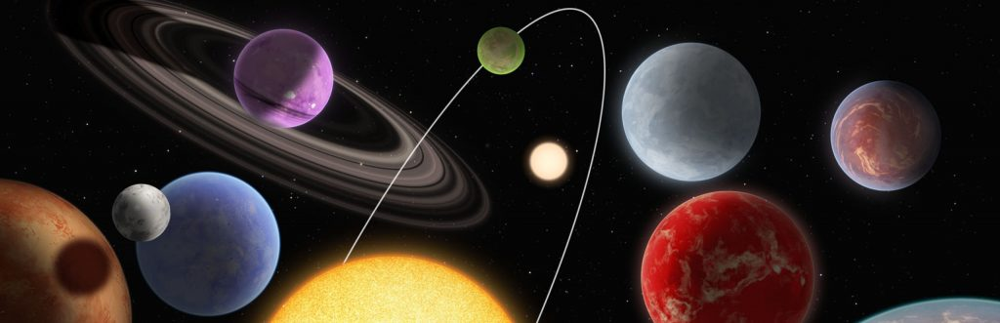

Research
My research aims to uncover the diversity of planetary physics among the exoplanet population. The thousands of exoplanets known to date encompass a staggering range of temperatures, sizes, and bulk densities, going beyond the conditions known to exist in the solar system. To learn about these distant planets, I use theoretical forward and inverse models of their atmospheres to study the interplay between various physical and chemical processes, and to place empirical constraints on these processes by interpreting atmospheric observations.
Below, you can read more about some of my recent projects. For a full list of publications, please see NASA ADS.
Interior Composition Model for Sub-Neptune Exoplanets: A Focus on K2-18b
The study of exoplanets has uncovered a variety of planetary compositions, offering insights into their internal structures. However, the differentiation of exoplanets' interiors introduces degeneracies among possible compositions, complicating efforts to accurately infer their internal properties. To address this, I utilized a novel approach by combining the 1D planet interior structure model, MAGRATHEA, with a nested sampling algorithm, UltraNest, aiming to constrain the interior structure of planets larger than Earth but smaller than Neptune (1-4 R⊕), the most common class in our galaxy. The model considers four components: an iron core, a silicate mantle, a water/ice hydrosphere, and an H2-dominated atmosphere.
Using nested sampling, I explored various compositional models and applied this method to K2-18b, a potentially habitable exoplanet, then compared my approach and results with previous studies. My findings suggest that K2-18b likely consists of low-density materials, possibly with an extended atmosphere and a mixed Fe-Si core. This research deepens our understanding of exoplanetary interiors, which are crucial for determining planetary climates and potential habitability.


Determination of the Base of the Convective Zone and the Helium Ionization Zone for 10 Solar-Type Stars
We compare our results with previous studies to validate the effectiveness of our approach. The results of our project will help enhance our understanding of exoplanetary interiors, which are crucial in driving planets’ climates and creating habitable conditions.